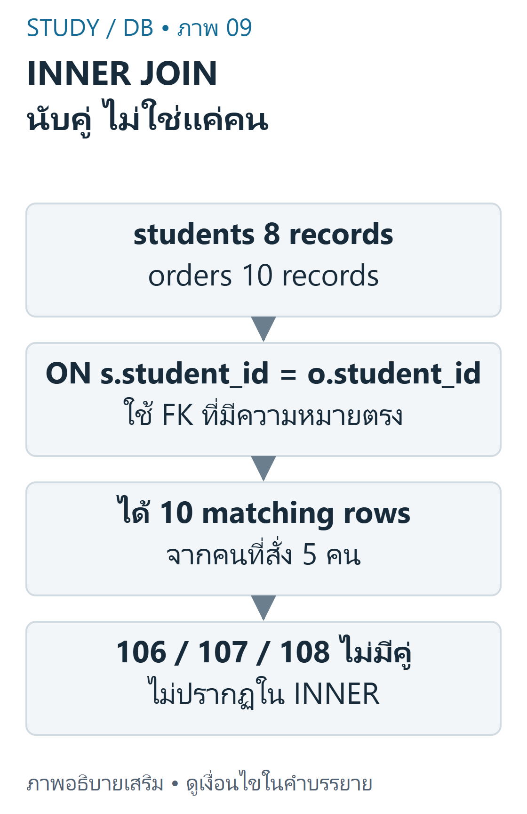
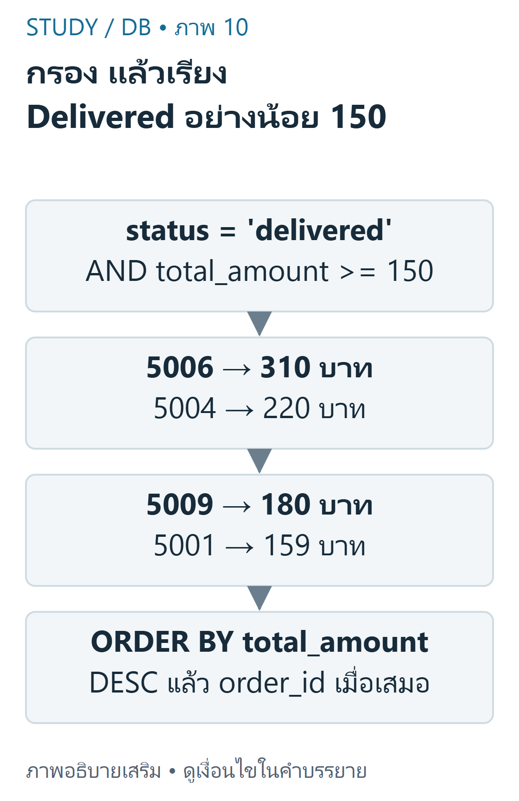

DB 05 — INNER JOIN และจำนวนแถว แยกให้ชัด: สไลด์ DB-S02 ใช้4นิสิต/3ออเดอร์ แต่ homework DB-D01/DB-H01 ใช้8นิสิต/10ออเดอร์ ไม่แทนผลนับของสองชุดให้กัน
เป้าหมายการเรียนรู้ ระบุคู่คีย์ที่มีความหมายและอ่าน ON ได้ คาดการณ์ matching rows และจำนวนคนแบบไม่ซ้ำให้ต่างจากจำนวนแถว เขียน alias,filter,sort ของ JOIN และตรวจผลกับข้อมูลต้นทาง ข้อมูลที่ใช้ในบท Campus HWเป็นข้อมูลจำลองตาม DB-D01 มี8studentsและ10orders ด้านล่างครบทุกแถวที่ต้องใช้ในบทนี้ จึงสามารถตรวจคู่คีย์และคำตอบได้โดยไม่ต้องเดาข้อมูลที่ไม่ได้ให้ จำนวนร้าน6/รายการ14จะใช้ในบทmulti-tableต่อไป
ON จับคู่ตามความสัมพันธ์ INNER JOIN เก็บคู่แถวที่เงื่อนไข ON เป็น TRUE students.student_id=orders.student_id สอดคล้องกับ FK ของออเดอร์ ไม่ใช่การเทียบแถวตำแหน่งเดียวกันและไม่ใช่เทียบ student_idกับorder_idเพราะทั้งคู่เป็นINT
ตัวอย่างพื้นฐานใช้เฉพาะข้อมูลสไลด์: students101–104กับorders5001→101,5002→102,5003→101 ได้3แถวแต่2นิสิตไม่ซ้ำคือ101และ102 ออเดอร์ของ101ทำให้ชื่อเดิมปรากฏได้สองครั้ง
SQL คัดลอกโค้ด
1 SELECT s.student_id,o.order_id 2 FROM slide_students s 3 JOIN slide_orders o 4 ON o.student_id=s.student_id 5 ORDER BY s.student_id,o.order_id; ตารางslide_students/slide_ordersเป็นชื่อแยกสำหรับเปรียบเทียบใน fixture เท่านั้น ในสไลด์ใช้ชื่อตารางstudents/ordersโดยตรงและมีข้อมูลเพียงชุดเล็กนั้น
Bag semantics และ1:N SQLปกติไม่ลบแถวซ้ำให้อัตโนมัติและหนึ่งแถวซ้ายจับได้หลายแถวขวา จึงไม่ควรใช้พื้นที่ทับกันของVennเป็นสูตรนับผล JOIN สำหรับCampusHW ออเดอร์ทั้ง10มีFKถูกต้อง จึงได้10matching rowsแต่มีนิสิต5คน ส่วน106,107,108หายไปเพราะไม่มีคู่

ภาพเขียนเสริม: INNER JOIN นับคู่ ไม่ใช่แค่คน — Campus8/10 ต่างจาก slide4/3ภาพเขียนเสริม ตรวจตามบทเรียนและเอกสารเทคนิค อ่านภาพ: Campus orders ทุกแถวมี student ที่อ้างได้จึงมี10 matching rows จากนิสิต5คนที่สั่ง อีก3คนไม่มีคู่และไม่ปรากฏใน INNER ผล SQL อาจซ้ำ identity ของ parent ได้
COUNT(*) นับแถวผลลัพธ์ ส่วนCOUNT(DISTINCT s.student_id) นับนิสิตไม่ซ้ำตามprojectionนั้น การใช้DISTINCTเพื่อซ่อนผลคูณผิดคีย์ไม่แก้เหตุผลของJOINและอาจตัดรายละเอียดที่ต้องการ
Filter และ Sort WHEREกรองผลmatching rowsตามเงื่อนไข และORDER BYกำหนดลำดับที่ตรวจได้ ใช้aliasให้ระบุที่มาคอลัมน์ได้ชัด เช่นs.student_nameและo.order_id ในINNER JOIN เงื่อนไขกรองที่เหมาะสมอาจย้ายระหว่างON/WHEREได้โดยยังได้ผลเดียวกัน แต่ห้ามเหมารวมไปยังOUTER JOIN

ภาพเขียนเสริม: กรอง แล้วเรียง Delivered อย่างน้อย 150 — amount หน่วยบาท;ไม่รวม cancelled/preparingภาพเขียนเสริม ตรวจตามบทเรียนและเอกสารเทคนิค อ่านภาพ: Campus เลือก delivered และ total_amount>=150 ได้5006ยอด310,5004ยอด220,5009ยอด180,5001ยอด159บาท เรียงยอด DESC และ order_id เป็น tie key
ตัวอย่างต่อยอดจากhomeworkข้อ5: เลือกdeliveredและtotal_amountตั้งแต่150บาทขึ้นไป เรียงยอดDESCและorder_idเป็นtie-breaker มี4ออเดอร์คือ5006,5004,5009,5001
SQL คัดลอกโค้ด
1 SELECT s.student_name,s.faculty,o.order_id,o.order_date,o.total_amount,o.status 2 FROM students s 3 JOIN orders o 4 ON o.student_id=s.student_id 5 WHERE o.status='delivered' AND o.total_amount>=150 6 ORDER BY o.total_amount DESC,o.order_id; เขียนผลลัพธ์ให้ตรวจย้อนกลับได้ เฉลยที่เขียนเสริมสำหรับhomeworkข้อ4ใช้projectionตามโจทย์และเรียงorder_id ไม่มีการอ้างว่าเป็นofficial answer key ผลครบ10แถวสามารถตามจากตารางต้นทางด้านบนได้ทุกแถว
SQL คัดลอกโค้ด
1 SELECT s.student_name,s.faculty,o.order_id,o.order_date,o.total_amount,o.status 2 FROM students s 3 JOIN orders o 4 ON o.student_id=s.student_id 5 ORDER BY o.order_id; เริ่มตรวจจากมีนา101→5001/5003 ต้น102→5002/5007 แล้วจึงตรวจคนอื่น หากใช้ ON s.student_id=o.order_id กับชุดนี้จะได้0แถวเพราะช่วง101–108ไม่เท่ากับ5001–5010 แม้SQLรันได้ก็จับคู่ความหมายผิด
เนื้อหาฝึกเขียนและเฉลยต่อไปนี้เรียบเรียงเพื่อการเรียน ไม่ใช่ข้อสอบจริงหรือเฉลยทางการของผู้สอน เว็บไซต์นี้แสดงตัวอย่างแบบ static; ไม่ส่ง SQL, PHP หรือข้อมูลบัญชีไปรันบนเซิร์ฟเวอร์มหาวิทยาลัย
ข้อผิดพลาดที่พบบ่อย ตอบ3แถวให้homeworkเพราะจำจากslide dataset หรือสับสน5คนกับ10แถว ใช้wrong key/ไม่มีON หรือคิดว่าจำเป็นต้องอยู่ในDBคนละเครื่องจึงJOINได้ คิดว่าผลลัพธ์เรียงเองเมื่อไม่มีORDER BY ใช้DISTINCTโดยไม่เข้าใจว่าข้อมูลใดจะถูกตัดออก ฝึกคิดพร้อมเหตุผล ข้อ1: ทำไม101ออกสองครั้ง? เฉลย: มีorders5001และ5003จับคีย์เดียวกัน จึงเป็นสองคู่ที่ถูกต้องข้อ2: students106ไม่มีorderถือว่าแถวถูกลบหรือไม่? เฉลย: ไม่ถูกลบ INNER JOINเพียงไม่ส่งแถวนั้นออกมาข้อ3: ต้องการทุกคนแม้ไม่มีorderควรใช้INNERต่อหรือไม่? เฉลย: เปลี่ยนเป็นLEFT JOINโดยวางstudentsทางซ้ายและพิจารณาNULLสรุปทบทวน ใช้คีย์ที่อ้างความหมายเดียวกันและอ่านผลเป็นคู่แถว ชุดสไลด์ได้3rows/2people;CampusHWได้10rows/5people WHERE/ORDER BYและprojectionต้องตรงโจทย์;ตรวจผลย้อนจากข้อมูลจริง แหล่งข้อมูลและขอบเขต DB-S02 หน้า6,8–16; DB-H01 ข้อ1,2,4,5 และข้อมูลจำลอง; DB-D01. คำตอบและresult tablesเป็นการคำนวณเสริมที่ตรวจด้วยPython row model,SQLiteและMariaDB ไม่อ้างเป็นข้อสอบจริง. อ้างอิง MySQL JOIN และ SELECT .
บัญชีแหล่งข้อมูลและข้อจำกัด ระบุเลขหน้ากายภาพของ PDF ทุกครั้ง เอกสารต้นฉบับที่ผู้ใช้ให้เป็นไฟล์ local-only และไม่ได้เผยแพร่ซ้ำ ภาพและโจทย์ฝึกเป็นงานเขียนเสริมที่แยกจากต้นฉบับ
โหมดฝึกทำโจทย์ โจทย์ฝึกที่ผู้เขียนจัดทำ ไม่ใช่ข้อสอบจริงหรือเฉลยทางการ; การประเมินตนเองไม่รวมในคะแนนอัตโนมัติ
โจทย์ฝึกที่ผู้เขียนจัดทำ ไม่ใช่ข้อสอบจริง: สไลด์JOIN4students/3ordersกับCampus8/10ควรใช้ปนกันหรือไม่? A. ใช้ได้เพราะชื่อtableเหมือนกัน B. ไม่ ต้องระบุdatasetก่อนนับ C. ใช้ได้ถ้าINNERJOIN D. ทุกdatasetต้องมีแถวเท่ากัน ทบทวนเนื้อหาที่เกี่ยวข้อง อ่านเฉลยและแนวประเมิน ไม่ ต้องระบุdatasetก่อนนับ
slidefixtureและhomeworkfixtureเป็นคนละชุด
โจทย์ฝึกที่ผู้เขียนจัดทำ ไม่ใช่ข้อสอบจริง: เงื่อนไขJOINCampusstudentsกับordersที่ถูกคืออะไร? A. s.student_id=o.order_id B. s.faculty=o.status C. s.student_id=o.student_id D. s.student_name=o.total_amount ทบทวนเนื้อหาที่เกี่ยวข้อง อ่านเฉลยและแนวประเมิน s.student_id=o.student_id
FKstudent_idในordersอ้างPKstudents
โจทย์ฝึกที่ผู้เขียนจัดทำ ไม่ใช่ข้อสอบจริง: Campus INNERstudents→ordersที่ONstudent_idถูกต้องคืนกี่rows? ทบทวนเนื้อหาที่เกี่ยวข้อง อ่านเฉลยและแนวประเมิน 10
ทุกorderมีstudentที่อ้างได้ จึง10matches แม้มี5คนที่สั่ง
โจทย์ฝึกที่ผู้เขียนจัดทำ ไม่ใช่ข้อสอบจริง: INNERJOINจะคืนstudentที่ไม่มีorderหรือไม่? A. ไม่ เมื่อไม่มีคู่ตรงON B. คืนพร้อมNULLเสมอ C. สร้างorderให้เอง D. คืนครบทุกstudentเสมอ ทบทวนเนื้อหาที่เกี่ยวข้อง อ่านเฉลยและแนวประเมิน ไม่ เมื่อไม่มีคู่ตรงON
ถ้าต้องรักษาฝั่งstudentsให้พิจารณาLEFT
โจทย์ฝึกที่ผู้เขียนจัดทำ ไม่ใช่ข้อสอบจริง: Campusมีนิสิตที่มีorderแตกต่างกันกี่คน และเหตุใดไม่เท่าrowcount? A. 10คน เพราะ10rows B. 5คน เพราะบางคนมีหลายorders C. 8คน เพราะมีstudents8 D. 3คน เพราะมีNULL3 ทบทวนเนื้อหาที่เกี่ยวข้อง อ่านเฉลยและแนวประเมิน 5คน เพราะบางคนมีหลายorders
IDs101–105มีordersหลายแถว;DISTINCTidentityต่างจำนวนmatches
โจทย์ฝึกที่ผู้เขียนจัดทำ ไม่ใช่ข้อสอบจริง: เขียนINNERแสดงชื่อและorder_idจากCampus ทบทวนเนื้อหาที่เกี่ยวข้อง อ่านเฉลยและแนวประเมิน ประเมินคำอธิบายตามเกณฑ์ทีละข้อ; โจทย์นี้ไม่มีคะแนนอัตโนมัติ
FKตรง aliasesชัด ORDERBYเพื่อผลซ้ำได้ คลังข้อสอบฝึกเพิ่มเติม โจทย์ที่ผู้เขียนจัดทำ ไม่ใช่ข้อสอบจริง การประเมินตนเองไม่รวมคะแนน
โจทย์ฝึกที่ผู้เขียนจัดทำ ไม่ใช่ข้อสอบจริง: สไลด์JOIN4students/3ordersกับCampus8/10ควรใช้ปนกันหรือไม่? A. ใช้ได้เพราะชื่อtableเหมือนกัน B. ไม่ ต้องระบุdatasetก่อนนับ C. ใช้ได้ถ้าINNERJOIN D. ทุกdatasetต้องมีแถวเท่ากัน ทบทวนเนื้อหาที่เกี่ยวข้อง อ่านเฉลยและแนวประเมิน ไม่ ต้องระบุdatasetก่อนนับ
slidefixtureและhomeworkfixtureเป็นคนละชุด
โจทย์ฝึกที่ผู้เขียนจัดทำ ไม่ใช่ข้อสอบจริง: เงื่อนไขJOINCampusstudentsกับordersที่ถูกคืออะไร? A. s.student_id=o.order_id B. s.faculty=o.status C. s.student_id=o.student_id D. s.student_name=o.total_amount ทบทวนเนื้อหาที่เกี่ยวข้อง อ่านเฉลยและแนวประเมิน s.student_id=o.student_id
FKstudent_idในordersอ้างPKstudents
โจทย์ฝึกที่ผู้เขียนจัดทำ ไม่ใช่ข้อสอบจริง: Campus INNERstudents→ordersที่ONstudent_idถูกต้องคืนกี่rows? ทบทวนเนื้อหาที่เกี่ยวข้อง อ่านเฉลยและแนวประเมิน 10
ทุกorderมีstudentที่อ้างได้ จึง10matches แม้มี5คนที่สั่ง
โจทย์ฝึกที่ผู้เขียนจัดทำ ไม่ใช่ข้อสอบจริง: INNERJOINจะคืนstudentที่ไม่มีorderหรือไม่? A. ไม่ เมื่อไม่มีคู่ตรงON B. คืนพร้อมNULLเสมอ C. สร้างorderให้เอง D. คืนครบทุกstudentเสมอ ทบทวนเนื้อหาที่เกี่ยวข้อง อ่านเฉลยและแนวประเมิน ไม่ เมื่อไม่มีคู่ตรงON
ถ้าต้องรักษาฝั่งstudentsให้พิจารณาLEFT
โจทย์ฝึกที่ผู้เขียนจัดทำ ไม่ใช่ข้อสอบจริง: Campusมีนิสิตที่มีorderแตกต่างกันกี่คน และเหตุใดไม่เท่าrowcount? A. 10คน เพราะ10rows B. 5คน เพราะบางคนมีหลายorders C. 8คน เพราะมีstudents8 D. 3คน เพราะมีNULL3 ทบทวนเนื้อหาที่เกี่ยวข้อง อ่านเฉลยและแนวประเมิน 5คน เพราะบางคนมีหลายorders
IDs101–105มีordersหลายแถว;DISTINCTidentityต่างจำนวนmatches
โจทย์ฝึกที่ผู้เขียนจัดทำ ไม่ใช่ข้อสอบจริง: เขียนINNERแสดงชื่อและorder_idจากCampus ทบทวนเนื้อหาที่เกี่ยวข้อง อ่านเฉลยและแนวประเมิน ประเมินคำอธิบายตามเกณฑ์ทีละข้อ; โจทย์นี้ไม่มีคะแนนอัตโนมัติ
FKตรง aliasesชัด ORDERBYเพื่อผลซ้ำได้ โจทย์ฝึกที่ผู้เขียนจัดทำ ไม่ใช่ข้อสอบจริง: WHEREstatus=delivered ANDtotal_amount>=150ควรใช้เครื่องหมายใดกับ150? A. > B. =เท่านั้น C. < D. >= ทบทวนเนื้อหาที่เกี่ยวข้อง อ่านเฉลยและแนวประเมิน >=
อย่างน้อยรวมค่า150 แม้fixtureนี้ไม่มี150พอดี
โจทย์ฝึกที่ผู้เขียนจัดทำ ไม่ใช่ข้อสอบจริง: Campus deliveredยอดอย่างน้อย150 มีorder5006,5004,5009,5001 รวมกี่orders? ทบทวนเนื้อหาที่เกี่ยวข้อง อ่านเฉลยและแนวประเมิน 4
filterจาก10ordersได้4 ไม่รวมcancelled5003/5008หรือpreparing
โจทย์ฝึกที่ผู้เขียนจัดทำ ไม่ใช่ข้อสอบจริง: ผลยอดมากไปน้อยในlarge-deliveredเรียงorder_idอย่างไร? A. 5001,5004,5009,5006 B. 5006,5004,5009,5001 C. 5006,5003,5002,5001 D. 5004,5004,5004,5004 ทบทวนเนื้อหาที่เกี่ยวข้อง อ่านเฉลยและแนวประเมิน 5006,5004,5009,5001
ยอด310,220,180,159ตามDESCและtiekeyorder_id
โจทย์ฝึกที่ผู้เขียนจัดทำ ไม่ใช่ข้อสอบจริง: Alias s และoมีประโยชน์อย่างไร? A. สร้างtablecopyถาวร B. เปลี่ยนPKเอง C. ทำให้คอลัมน์และแหล่งที่มาชัด D. เปิดsession ทบทวนเนื้อหาที่เกี่ยวข้อง อ่านเฉลยและแนวประเมิน ทำให้คอลัมน์และแหล่งที่มาชัด
โดยเฉพาะคีย์ชื่อstudent_idที่ซ้ำสองtable
โจทย์ฝึกที่ผู้เขียนจัดทำ ไม่ใช่ข้อสอบจริง: student101มีสองorders INNERJOINควรได้กี่แถวสำหรับ101? A. 1เพราะPKunique B. 0เพราะซ้ำ C. 8เพราะstudents8 D. 2แถว ทบทวนเนื้อหาที่เกี่ยวข้อง อ่านเฉลยและแนวประเมิน 2แถว
uniquePKในparentไม่ได้ห้ามหลายchildmatches
โจทย์ฝึกที่ผู้เขียนจัดทำ ไม่ใช่ข้อสอบจริง: เติมDISTINCTชื่อคนเพื่อให้เหลือ5แถวตอบคำถามจำนวนordersถูกหรือไม่? A. ไม่ เปลี่ยนหน่วยจากordersเป็นคน B. ถูกทุกกรณี C. ทำให้10ordersยังอยู่ครบทุกcolumn D. ทำให้มีorderเพิ่ม ทบทวนเนื้อหาที่เกี่ยวข้อง อ่านเฉลยและแนวประเมิน ไม่ เปลี่ยนหน่วยจากordersเป็นคน
ใช้DISTINCTเมื่อโจทย์ต้องการidentityคน ไม่กลบmultiplicity
โจทย์ฝึกที่ผู้เขียนจัดทำ ไม่ใช่ข้อสอบจริง: ONอาจใช้คอลัมน์ไม่ใช่FKได้ทางSQL แต่เหตุใดควรอ่านschema? A. SQLบังคับทุกJOINต้องFKเสมอ B. SQLsyntaxผ่านไม่ได้รับรองความหมายของการจับคู่ C. ONใส่อะไรก็ให้คำตอบเดียว D. columnเลขทุกตัวเหมือนกัน ทบทวนเนื้อหาที่เกี่ยวข้อง อ่านเฉลยและแนวประเมิน SQLsyntaxผ่านไม่ได้รับรองความหมายของการจับคู่
เลือกconditionตามrelationshipจริง
โจทย์ฝึกที่ผู้เขียนจัดทำ ไม่ใช่ข้อสอบจริง: ORDER BY total_amount DESC,order_idทำอะไรเมื่อยอดเท่ากัน? A. ลบแถวที่ยอดเท่ากัน B. แปลงยอดเป็นNULL C. เรียงorder_idเป็นtiekey D. รวมordersให้เหลือ1 ทบทวนเนื้อหาที่เกี่ยวข้อง อ่านเฉลยและแนวประเมิน เรียงorder_idเป็นtiekey
ให้ผลdeterministicโดยไม่เปลี่ยนจำนวนrows
โจทย์ฝึกที่ผู้เขียนจัดทำ ไม่ใช่ข้อสอบจริง: นิสิต106,107,108หายจากINNERแปลว่าไม่มีrecordstudentsหรือไม่? A. ใช่ถูกลบแล้ว B. แปลว่าPKผิดเสมอ C. แปลว่าXSS D. ไม่ มีstudentแต่ไม่มีmatchingorder ทบทวนเนื้อหาที่เกี่ยวข้อง อ่านเฉลยและแนวประเมิน ไม่ มีstudentแต่ไม่มีmatchingorder
INNERไม่รักษาunmatchedparent
โจทย์ฝึกที่ผู้เขียนจัดทำ ไม่ใช่ข้อสอบจริง: COUNT(*)กับCOUNT(DISTINCTstudent_id)ในINNERCampusต่างกันอย่างไร? A. 10matchesกับ5people B. 5matchesกับ10people C. ทั้งคู่8เสมอ D. ทั้งคู่0เพราะFK ทบทวนเนื้อหาที่เกี่ยวข้อง อ่านเฉลยและแนวประเมิน 10matchesกับ5people
ต้องระบุหน่วยการนับ
โจทย์ฝึกที่ผู้เขียนจัดทำ ไม่ใช่ข้อสอบจริง: ถ้าละONและทำCROSSของ8students10ordersจะเกิดอะไร? A. 10คู่เหมือนINNERเสมอ B. 80คู่โดยไม่อิงFK C. 8คู่ตามPK D. ไม่มีแถวเพราะSQLบังคับFK ทบทวนเนื้อหาที่เกี่ยวข้อง อ่านเฉลยและแนวประเมิน 80คู่โดยไม่อิงFK
CROSSคือCartesianproduct ไม่ใช่matchingrelationship
โจทย์ฝึกที่ผู้เขียนจัดทำ ไม่ใช่ข้อสอบจริง: ต้องการยอดสูงเฉพาะdeliveredแต่เขียนORแทนAND ส่งผลใด? A. เหมือนANDทุกdataset B. ลบorders C. รับแถวที่ผ่านเพียงเงื่อนไขหนึ่ง ทำให้กว้างขึ้น D. เรียงยอดเอง ทบทวนเนื้อหาที่เกี่ยวข้อง อ่านเฉลยและแนวประเมิน รับแถวที่ผ่านเพียงเงื่อนไขหนึ่ง ทำให้กว้างขึ้น
operatorตรรกะเปลี่ยนผลfilter ต้องตรงข้อความโจทย์
โจทย์ฝึกที่ผู้เขียนจัดทำ ไม่ใช่ข้อสอบจริง: NULL Cafeที่ไม่เคยมีitemบอกว่าrestauranttableมีเพียง5ร้านหรือไม่? A. มี5เพราะINNERมองไม่เห็น B. มี0เพราะชื่อNULL C. มี14ตามitems D. ไม่ มี6recordรวมร้านนั้น ทบทวนเนื้อหาที่เกี่ยวข้อง อ่านเฉลยและแนวประเมิน ไม่ มี6recordรวมร้านนั้น
inventoryกับjoinedparticipationต่างกัน
โจทย์ฝึกที่ผู้เขียนจัดทำ ไม่ใช่ข้อสอบจริง: WHEREs.student_id=o.student_idในINNERแบบcommaเทียบexplicitJOINควรสอนอย่างไร? A. อาจเทียบผลได้แต่explicitJOINชี้relationshipชัดกว่า B. commaบังคับLEFTเสมอ C. explicitJOINรันPHP D. WHEREห้ามเปรียบเทียบcolumns ทบทวนเนื้อหาที่เกี่ยวข้อง อ่านเฉลยและแนวประเมิน อาจเทียบผลได้แต่explicitJOINชี้relationshipชัดกว่า
สำคัญที่predicateและsemantics ไม่ใช่เดาว่าทุกรูปแบบเหมือนouterjoin
โจทย์ฝึกที่ผู้เขียนจัดทำ ไม่ใช่ข้อสอบจริง: ต้องการรายชื่อคนที่เคยสั่งไม่ซ้ำควรprojectionใด? A. DISTINCTtotal_amountอย่างเดียว B. DISTINCTs.student_id,s.student_name C. ทุกitem_idแล้วคาดว่าเหลือคนละ1 D. COUNT(*)อย่างเดียวเป็นชื่อ ทบทวนเนื้อหาที่เกี่ยวข้อง อ่านเฉลยและแนวประเมิน DISTINCTs.student_id,s.student_name
identityควรมีkey ไม่สมมติว่าชื่อคนunique
โจทย์ฝึกที่ผู้เขียนจัดทำ ไม่ใช่ข้อสอบจริง: queryเงินคืน5006ยอด310 อ้างหน่วยใดตามsource? A. จำนวนitems310ชิ้น B. หน่วยเวลา310ms C. บาทตามtotal_amountของออเดอร์ D. accuracy310เปอร์เซ็นต์ ทบทวนเนื้อหาที่เกี่ยวข้อง อ่านเฉลยและแนวประเมิน บาทตามtotal_amountของออเดอร์
รักษาหน่วยจากdataset ไม่ตั้งหน่วยใหม่
โจทย์ฝึกที่ผู้เขียนจัดทำ ไม่ใช่ข้อสอบจริง: ถ้าorderของ101เพิ่มอีกหนึ่งโดยอ้างFKถูก INNERmatchesของ101จะเป็นอย่างไร? A. studentrecordเพิ่มเอง B. matchesลดหนึ่ง C. FKห้ามมีorderเพิ่ม D. เพิ่มหนึ่งแถวสำหรับorderนั้น ทบทวนเนื้อหาที่เกี่ยวข้อง อ่านเฉลยและแนวประเมิน เพิ่มหนึ่งแถวสำหรับorderนั้น
1:Nขยายผลตามchildจำนวนจริง;นี่คือสมมติเสริมไม่ใช่sourceเพิ่ม
โจทย์ฝึกที่ผู้เขียนจัดทำ ไม่ใช่ข้อสอบจริง: INNERJOINหมายถึงจุดตัดของรายชื่อคนอย่างเดียวหรือไม่? A. ไม่ ผลSQLมีหนึ่งแถวต่อคู่ที่ตรงและอาจซ้ำคน B. ใช่ไม่คืนduplicateใดเลย C. เท่ากับLEFTทุกครั้ง D. คือการUNIONของทุกrow ทบทวนเนื้อหาที่เกี่ยวข้อง อ่านเฉลยและแนวประเมิน ไม่ ผลSQLมีหนึ่งแถวต่อคู่ที่ตรงและอาจซ้ำคน
Vennsetไม่สื่อbagmultiplicityครบ
โจทย์ฝึกที่ผู้เขียนจัดทำ ไม่ใช่ข้อสอบจริง: การตรวจexpected10rowsอย่างเดียวเพียงพอยืนยันONถูกหรือไม่? A. เพียงพอทุกschema B. ไม่ ต้องตรวจคีย์และค่าของแต่ละrowด้วย C. เพียงพอถ้าCSSถูก D. ไม่ต้องตรวจsource ทบทวนเนื้อหาที่เกี่ยวข้อง อ่านเฉลยและแนวประเมิน ไม่ ต้องตรวจคีย์และค่าของแต่ละrowด้วย
queryผิดอาจบังเอิญมีcountเท่ากัน ต้องเทียบorderedresult
โจทย์ฝึกที่ผู้เขียนจัดทำ ไม่ใช่ข้อสอบจริง: โจทย์/เฉลยในบทนี้ควรถูกเรียกอย่างไร? A. ข้อสอบFinalจริง B. เฉลยทางการผู้สอน C. แบบฝึกที่ผู้เขียนตรวจอิสระ อ้างการบ้านเป็นหลักฐาน D. การคาดการณ์น้ำหนักสอบ ทบทวนเนื้อหาที่เกี่ยวข้อง อ่านเฉลยและแนวประเมิน แบบฝึกที่ผู้เขียนตรวจอิสระ อ้างการบ้านเป็นหลักฐาน
sourcehomeworkไม่เท่ากับofficialexamkey
โจทย์ฝึกที่ผู้เขียนจัดทำ ไม่ใช่ข้อสอบจริง: อธิบาย10rowsแต่5peopleด้วยstudent101 ทบทวนเนื้อหาที่เกี่ยวข้อง อ่านเฉลยและแนวประเมิน ประเมินคำอธิบายตามเกณฑ์ทีละข้อ; โจทย์นี้ไม่มีคะแนนอัตโนมัติ
ยกสองordersของ101 แยกcountrow/identity ไม่ใช้Vennแทนทุกอย่าง โจทย์ฝึกที่ผู้เขียนจัดทำ ไม่ใช่ข้อสอบจริง: ออกแบบquerydeliveredยอด>=150เรียงยอดมากก่อน ทบทวนเนื้อหาที่เกี่ยวข้อง อ่านเฉลยและแนวประเมิน ประเมินคำอธิบายตามเกณฑ์ทีละข้อ; โจทย์นี้ไม่มีคะแนนอัตโนมัติ
ANDถูก >=รวมthreshold DESCและtiekey โจทย์ฝึกที่ผู้เขียนจัดทำ ไม่ใช่ข้อสอบจริง: เปรียบเทียบslidefixtureกับhomeworkfixture ทบทวนเนื้อหาที่เกี่ยวข้อง อ่านเฉลยและแนวประเมิน ประเมินคำอธิบายตามเกณฑ์ทีละข้อ; โจทย์นี้ไม่มีคะแนนอัตโนมัติ
4/3กับ8/10 ไม่ปนผลนับ ระบุแหล่งเลขชัด โจทย์ฝึกที่ผู้เขียนจัดทำ ไม่ใช่ข้อสอบจริง: เสนอoracleตรวจINNERที่ไม่คัดSQLalgorithmซ้ำ ทบทวนเนื้อหาที่เกี่ยวข้อง อ่านเฉลยและแนวประเมิน ประเมินคำอธิบายตามเกณฑ์ทีละข้อ; โจทย์นี้ไม่มีคะแนนอัตโนมัติ
nestedloopตามFK เทียบแต่ละrow กำหนดsortก่อนเทียบ